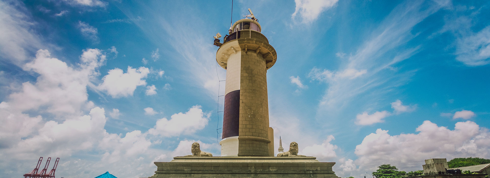
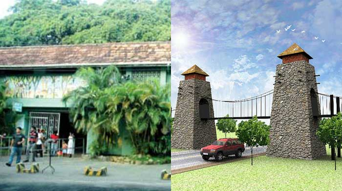
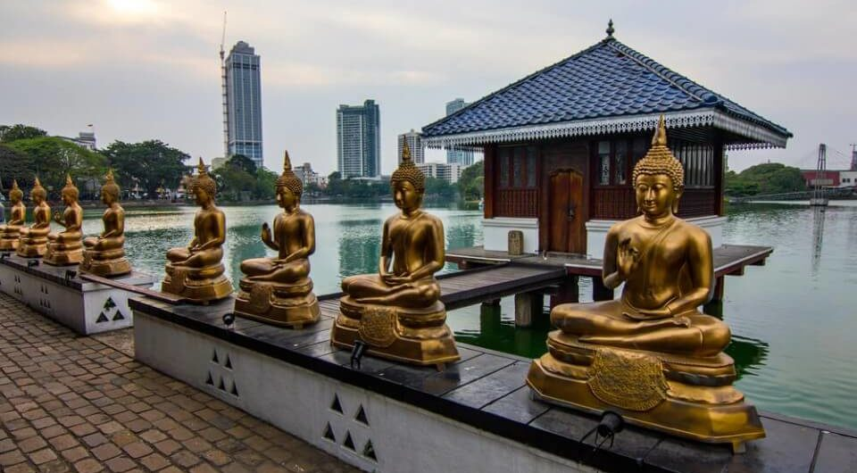
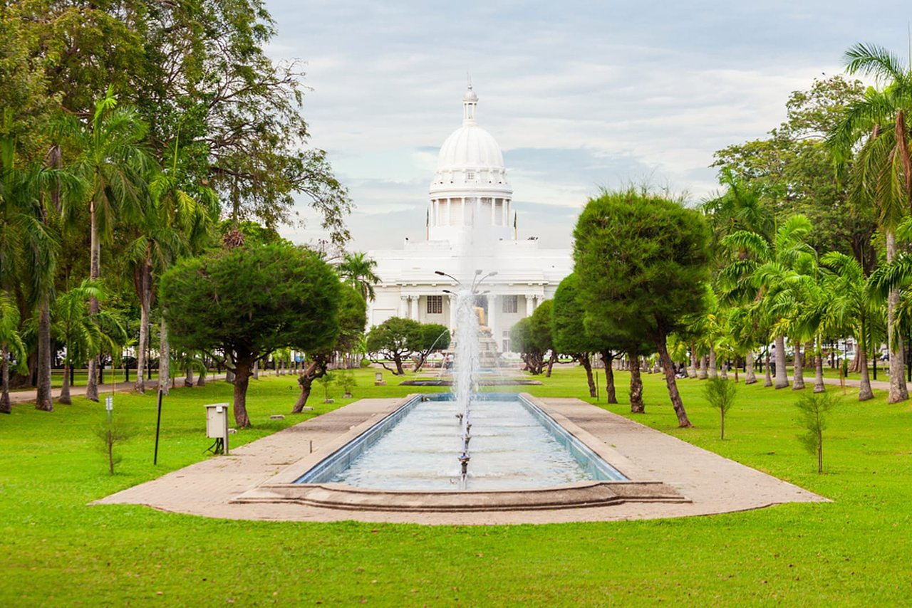
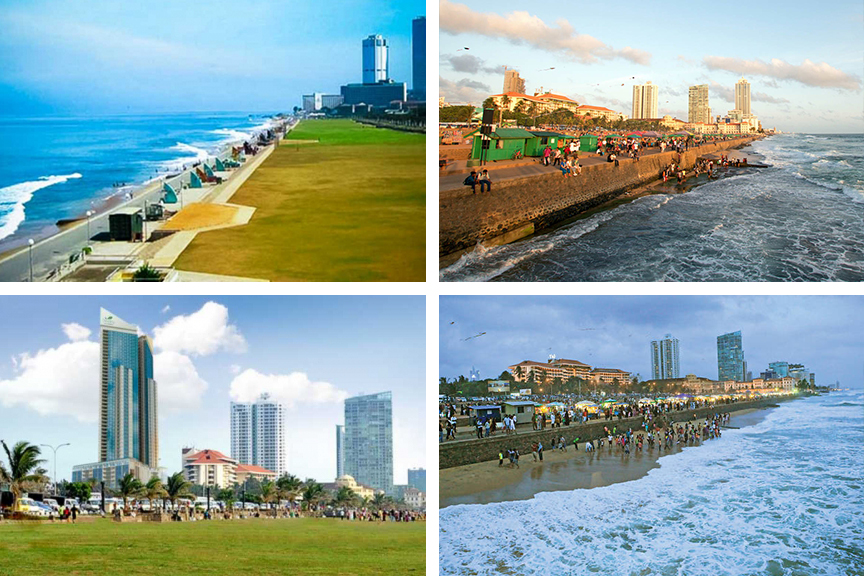
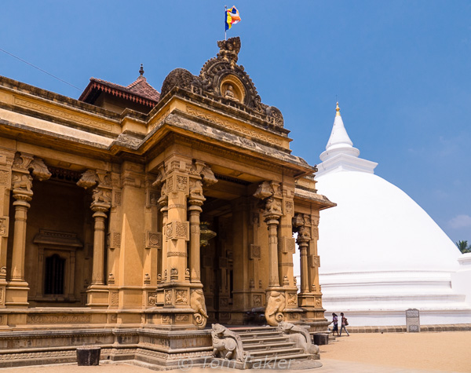
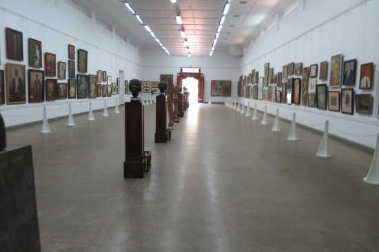
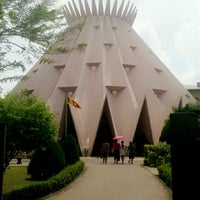

Colombo
 Located 320 km from Colombo, the Arugam Bay Beach will let you unleash your wild side.
This is the best place to let go of the mundane and engage in the adventure.
A major surging point here is the surfing point called ‘Main Point’ which is located towards the South of the Bay.
This thrilling adventurous spot in Colombo is also a relaxing place which will allow you to just lay back.
The place is relatively free from inhabitation and is a great place to visit for those who want some peace and quiet.
If you are hungry after your thrill-seeking activities, you can head over to the tsunami hotel for some amazing rice and curries or
check out the Kumana National Park which is located nearby if you have some time on your hands.
Located 320 km from Colombo, the Arugam Bay Beach will let you unleash your wild side.
This is the best place to let go of the mundane and engage in the adventure.
A major surging point here is the surfing point called ‘Main Point’ which is located towards the South of the Bay.
This thrilling adventurous spot in Colombo is also a relaxing place which will allow you to just lay back.
The place is relatively free from inhabitation and is a great place to visit for those who want some peace and quiet.
If you are hungry after your thrill-seeking activities, you can head over to the tsunami hotel for some amazing rice and curries or
check out the Kumana National Park which is located nearby if you have some time on your hands.

Old Galle buck lighthouse is situated in close proximity to the Galle Face Green within the area of the Sri Lankan Navy.
It offers solitude to those who want it and you can climb up to the rustic lighthouse and take in the panoramic visions of the crashing
Indian Ocean as you feel the wind in your hair. Always head over here after 5 PM to get the best views as this place works its magic after sunset.

Operating since 1963, this Zoo is also known as the National Zoological Gardens of Sri Lanka.
The zoo was established with an aim to provide protection and shelter to a wide range of wild animals and birds.
While here don’t miss out of the amazing performances by the sea lions, chimpanzees and elephants.
There are also some of the most exotic varieties of fish, mammals, birds, reptiles and more.
The Zoo has been an active member of World Association of Zoos and Aquariums and it contributes breeding for being a part of animal exchange programs.
It is certainly one of the most impressive places to visit in Sri Lanka as well. Try not to keep any other engagements when visiting this zoo.

Your visit to Sri Lanka is not a complete one if you miss out on the great Gangaramaya Buddhist Temple.
A sacred and a site of great significance to all the travelers and locals alike, this temple is an epitome of architectural brilliance.
Featuring the intricacy of Thai, Indian, and Chinese architecture in its design, the temple also houses a museum, and a library within
the premises and is one of the top tourist places in Colombo.

Comprising of a park, a zoo, waterfalls, picnic hotspots, walking trails, thrilling rides, and an unruffled statue of Buddha,
Viharamahadevi Park is one of the must visit places in Colombo for every traveler. Other than all the aforementioned activities,
the park also features a library for travelers to relax and be all by themselves. Treating families, couples, and friends alike,
make sure you dont miss out on this one when in Sri Lanka.

Comprising of a park, a zoo, waterfalls, picnic hotspots, walking trails, thrilling rides, and an unruffled statue of Buddha,
Viharamahadevi Park is one of the must visit places in Colombo for every traveler. Other than all the aforementioned activities,
the park also features a library for travelers to relax and be all by themselves. Treating families, couples, and friends alike,
make sure you dont miss out on this one when in Sri Lanka.

Standing tall despite being destroyed twice by Indian and Portugese invaders, it is said that Lord Buddha visited the current site of the temple when he visited the
continent for the third time. Restored by the Dutch during the 18th century, this grand temple of Kelaniya Raja Maha Vihara today stands as a landmark of cultural charm amongst
all the other tourist attractions in Colombo city.

The National Art Gallery is one of the best places to visit in Colombo to explore and know about the history,
art and culture of Sri Lanka. The gallery displays hundreds of ancient and contemporary artworks. The are classical paintings and modern
installations like statues and landscapes by local and young artists.

TEstablished in 1965, Sri Lanka Planetarium is the only planetarium in Sri Lanka and one of the best places to visit in Colombo.
It has gained popularity among visitors and reputation among those who are into astronomy. The building is designed in the shape of a lotus.
The auditorium has the capacity to seat 570 seat people and has a 4D projector that takes you on a virtual tour of the universe.
The planetarium is located within the premises of the University of Colombo. You can catch a free show here on Sundays.
|